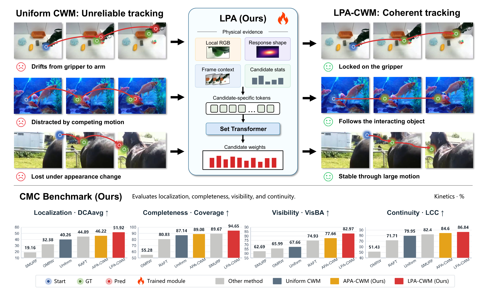
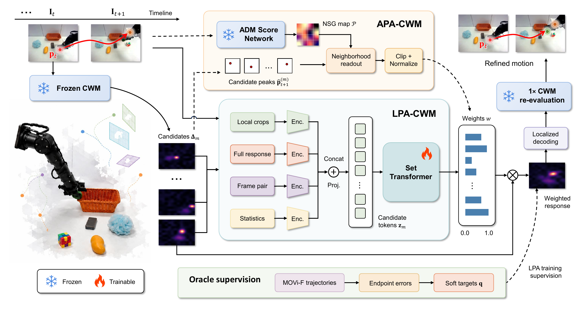

APA-CWM
Analytic Physical Adjudicator
Training-free candidate weighting from a frozen ADM / NSG physical-consistency cue.


Training-free candidate weighting from a frozen ADM / NSG physical-consistency cue.
Candidate-specific tokens are jointly compared by a Set Transformer and supervised using MOVi-F endpoint errors.
Weighted responses are locally decoded, followed by one paired CWM re-evaluation to obtain refined motion.